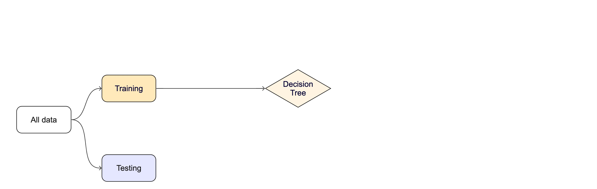

Lecture 15
Machine Learning & Data Budgets
Key Take Aways:
As of 11PM last night 36/86 students have completed the feedback survey.
- Most peole are feeling very confident with Unit 1, but not with Unit 2…
(Please remeber the general feelings after unit 1)
- There is a general feeling of wanting to memorize the functions, and it being limited by the speed of the course.
To be a great scientist, coding isn’t about memorizing functions — it’s about understanding concepts, problem-solving, and knowing how to find and apply the right tools. Developers frequently reference documentation, libraries, and online resources to write efficient code. The key skills are logical thinking, debugging, and structuring solutions. From the feedback, this is something that students are proud of improving.
- There is a beleif that this is an intro class, however it is a 300 level course. While we are introducing R as a tool, our goal is to help you think about data in a simular way as your computer, and plan for ways to answers questions whether with a model, statistical test, visualization, or report.
Our goal as the teaching team to is expose you to the foundational concepts so that you are more ready to think in this way (quantitiative reasoning aspect of the course). The generous grading policy is to help you learn and grow in this way.
- There is a general feeling of not making as fast of progress as hoped, but feeling really proad of the progress made.
I am not kidding when I say it took me 5+ years to get comfortable with R and to feel I could write a significant amount of code without the help docs, or stackoverflow (pre-chatGPT days). That said I still spend a significant amount of time on them. That part will never go away.
- There is a hope for different office hours…
How would 230-330pm on Mondays/Wednesdays work for everyone?
- Almost everyone mentioned feeling proud of the progress they have made.
That makes us so happy and we hope to be able supporting that. I can promise you, that already you are more equipt then most undergrads I interview coming out of environmental science programs.
I will report back with more if more submit.
Grades: Pre-regrades
- 36% of the class asked for at least one regrade
| Letter | Current ESS 330 distribution | Past distribution for simular classes |
|---|---|---|
| A | 41% | 50% |
| B | 19% | 20% |
| C | 14% | 5% |
| D | 1% | 0% |
| F | 25% | 25% |
Of those current with F’s: The average points obtained are 79/389 = 20%.
- Lab Attendence: 74%
- Lab scores: 32%
- Daily Exercises: 28%
- EC Attendence day: 9 were attending, 12 were not.
On average 66 students are submitting work each week meaning 22% of students are not submitting work.
If you are not happy where you stand, will work with you but time is running out!!
One last chance …
We will allow regrade sumbissions until midnight tonight. There will be no other regrades after this point.
On lab 3, and lab 4: If you had a 0 due to the wrong type of submission, you can resubmit for full credit.
Your TA has commented if this is the case.
If you see this…
… be sure to set this!
Unit 3: Modeling (Machine Learning)

What is machine learning?

What is machine learning? (2025 edition)
Note
In the early 2010s, “Artificial intelligence†(AI) was largely synonymous with what we’ll refer to as “machine learning†in this workshop. In the late 2010s and early 2020s, AI usually referred to deep learning methods. Since the release of ChatGPT in late 2022, “AI†has come to also encompass large language models (LLMs) / generative models.

Classic Conceptual Model

What is tidymodels?
library(tidymodels)
#> ── Attaching packages ────────────────────────────────────── tidymodels 1.2.0 ──
#> ✔ broom 1.0.7 ✔ recipes 1.1.1
#> ✔ dials 1.4.0 ✔ rsample 1.2.1
#> ✔ dplyr 1.1.4 ✔ tibble 3.2.1
#> ✔ ggplot2 3.5.1 ✔ tidyr 1.3.1
#> ✔ infer 1.0.7 ✔ tune 1.3.0
#> ✔ modeldata 1.4.0 ✔ workflows 1.2.0
#> ✔ parsnip 1.3.0 ✔ workflowsets 1.1.0
#> ✔ purrr 1.0.4 ✔ yardstick 1.3.2
#> ── Conflicts ───────────────────────────────────────── tidymodels_conflicts() ──
#> ✖ purrr::discard() masks scales::discard()
#> ✖ dplyr::filter() masks stats::filter()
#> ✖ dplyr::lag() masks stats::lag()
#> ✖ recipes::step() masks stats::step()
#> • Search for functions across packages at https://www.tidymodels.org/find/The big picture: Road map
Week 1: - – Today: Sampling & Data Handling - – 03/26: Model Workflows Week 2: - – 03/31: Types of Models - – 04/02: Full Process Week 3: - – 04/07: Model Evaluation - – 04/09: Live Demo

Today: data
In any modeling effort, it’s crucial to evaluate the performance of a model using different validation techniques to ensure a model can generalize to unseen data.
But data is limited even in the age of “big data”.

Our typical process will like this:
- Read in raw data (
readr,dplyr::*_join) (single or multi table)
. . .
- Prepare the data (EDA/mutate/summarize/clean, etc)
- This is “Feature Engineering”
. . .
- Once we’ve established our features (rows), we decide how to “spend†them …
. . .
For machine learning, we typically split data into training and test sets:
. . .
The training set is used to estimate model parameters.
Spending too much data in training prevents us from computing a good assessment of model performance.
. . .
The test set is used as an independent assessment of performance.
Spending too much data in testing prevents us from computing good model parameter estimates.
How we split data

. . .
Splitting can be handled in many of ways. Typically, we base it off of a “hold out†percentage (e.g. 20%)
These hold out cases are extracted randomly from the data set. (remember seeds?)
. . .
- The training set is usually the majority of the data and provides a sandbox for testing different modeling appraoches.
. . .
The test set is held in reserve until one or two models are chosen.
The test set is then used as the final arbiter to determine the efficacy of the model.
Startification
In many cases, there is a structure to the data that would inhibit inpartial spliiting (e.g. a class, a region, a species, a sex, etc)
Imagine you have a jar of M&Ms in different colors — red, blue, and green. You want to take some candies out to taste, but you want to make sure you get a fair mix of each color, not just grabbing a bunch of red ones by accident.
Stratified resampling is like making sure that if your jar is 50% red, 30% blue, and 20% green, then the handful of candies you take keeps the same balance.
In data science, we do the same thing when we pick samples from a dataset: we make sure that different groups (like categories of people, animals, or weather types) are still fairly represented!
Initial splits 
- In
tidymodels, thersamplepackage provides functions for creating initial splits of data. - The
initial_split()function is used to create a single split of the data. - The
propargument defines the proportion of the data to be used for training. - The default is 0.75, which means 75% of the data will be used for training and 25% for testing.
set.seed(101991)
(resample_split <- initial_split(penguins, prop = 0.8))
#> <Training/Testing/Total>
#> <275/69/344>
#Sanity check
69/344
#> [1] 0.2005814Accessing the data:
- Once the data is split, we can access the training and testing data using the
training()andtesting()functions to extract the partitioned data from the full set:
penguins_train <- training(resample_split)
glimpse(penguins_train)
#> Rows: 275
#> Columns: 7
#> $ species <fct> Gentoo, Adelie, Gentoo, Chinstrap, Gentoo, Chinstrap…
#> $ island <fct> Biscoe, Torgersen, Biscoe, Dream, Biscoe, Dream, Dre…
#> $ bill_length_mm <dbl> 46.2, 43.1, 46.2, 45.9, 46.5, 48.1, 45.2, 55.9, 38.1…
#> $ bill_depth_mm <dbl> 14.9, 19.2, 14.4, 17.1, 13.5, 16.4, 17.8, 17.0, 17.0…
#> $ flipper_length_mm <int> 221, 197, 214, 190, 210, 199, 198, 228, 181, 195, 20…
#> $ body_mass_g <int> 5300, 3500, 4650, 3575, 4550, 3325, 3950, 5600, 3175…
#> $ sex <fct> male, male, NA, female, female, female, female, male…. . .
penguins_test <- testing(resample_split)
glimpse(penguins_test)
#> Rows: 69
#> Columns: 7
#> $ species <fct> Adelie, Adelie, Adelie, Adelie, Adelie, Adelie, Adel…
#> $ island <fct> Torgersen, Torgersen, Torgersen, Biscoe, Biscoe, Bis…
#> $ bill_length_mm <dbl> NA, 39.3, 36.6, 35.9, 38.8, 37.9, 39.2, 39.6, 36.7, …
#> $ bill_depth_mm <dbl> NA, 20.6, 17.8, 19.2, 17.2, 18.6, 21.1, 17.2, 18.8, …
#> $ flipper_length_mm <int> NA, 190, 185, 189, 180, 172, 196, 196, 187, 205, 187…
#> $ body_mass_g <int> NA, 3650, 3700, 3800, 3800, 3150, 4150, 3550, 3800, …
#> $ sex <fct> NA, male, female, female, male, female, male, female…Proportional Gaps
# Dataset
(table(penguins$species) / nrow(penguins))
#>
#> Adelie Chinstrap Gentoo
#> 0.4418605 0.1976744 0.3604651
# Training Data
(table(penguins_train$species) / nrow(penguins_train))
#>
#> Adelie Chinstrap Gentoo
#> 0.4581818 0.1818182 0.3600000
# Testing Data
(table(penguins_test$species) / nrow(penguins_test))
#>
#> Adelie Chinstrap Gentoo
#> 0.3768116 0.2608696 0.3623188Stratification Example
A stratified random sample conducts a specified split within defined subsets of subsets, and then pools the results.
Only one column can be used to define a strata but grouping/mutate opperations can be used to create a new column that can be used as a strata (e.g. species/island)
In the case of the penguins data, we can stratify by species (think back to our nested/linear model appraoch)
This ensures that the training and testing sets have the same proportion of each species as the original data.
# Set the seed
set.seed(123)
# Drop missing values and split the data
penguins <- drop_na(penguins)
penguins_strata <- initial_split(penguins, strata = species, prop = .8)
# Extract the training and testing sets
train_strata <- training(penguins_strata)
test_strata <- testing(penguins_strata)Proportional Alignment
# Check the proportions
# Dataset
table(penguins$species) / nrow(penguins)
#>
#> Adelie Chinstrap Gentoo
#> 0.4384384 0.2042042 0.3573574
# Training Data
table(train_strata$species) / nrow(train_strata)
#>
#> Adelie Chinstrap Gentoo
#> 0.4377358 0.2037736 0.3584906
# Testing Data
table(test_strata$species) / nrow(test_strata)
#>
#> Adelie Chinstrap Gentoo
#> 0.4411765 0.2058824 0.3529412Modeling
Once the data is split, we can decide what type of model to invoke.
Often, users simply pick a well known model type or class for a type of problem (Classic Conceptual Model)
We will learn more about model types and uses next week!
For now, just know that the training data is used to fit a model.
If we are certain about the model, we can use the test data to evaluate the model.

Modeling Options
But, there are many types of models, with different assumptions, behaviors, and qualities, that make some more applicable to a given dataset!
Most models have some type of parmeterization, that can often be tuned.
Testing combinations of model and tuning parmaters also requires some combintation of
training/testingsplits.

Modeling Options
What if we want to compare more models?
. . .
And/or more model configurations?
. . .
And we want to understand if these are important differences?
. . .
How can we use the training data to compare and evaluate different models? 🤔
. . .

Resampling
Testing combinations of model and tuning parmaters also requires some combintation of
training/testingsplits.Resampling methods, such as cross-validation and bootstraping, are empirical simulation systems that help facilitate this.
They create a series of data sets similar to the initial
training/testingsplit.In the first level of the diagram to the right, we first split the original data into
training/testingsets. Then, the training set is chosen for resampling.

Key Resampling Methods
Warning
Resampling is always used with the training set.
Resampling is a key step in model validation and assessment. The rsample package provides tools to create resampling strategies such as cross-validation, bootstrapping, and validation splits.
. . .
- K-Fold Cross-Validation: The dataset is split into multiple “folds†(e.g., 5-fold or 10-fold), where each fold is used as a validation set while the remaining data is used for training.
. . .
- Bootstrap Resampling: Samples are drawn with replacement from the training dataset to generate multiple datasets, which used to train and test the model.
. . .
- Monte Carlo Resampling (Repeated Train-Test Splits): Randomly splits data multiple times.
. . .
- Validation Split: Creates a single training and testing partition.
Cross-validation

Cross-validation

Cross-validation
penguins_train |> glimpse()
#> Rows: 275
#> Columns: 7
#> $ species <fct> Gentoo, Adelie, Gentoo, Chinstrap, Gentoo, Chinstrap…
#> $ island <fct> Biscoe, Torgersen, Biscoe, Dream, Biscoe, Dream, Dre…
#> $ bill_length_mm <dbl> 46.2, 43.1, 46.2, 45.9, 46.5, 48.1, 45.2, 55.9, 38.1…
#> $ bill_depth_mm <dbl> 14.9, 19.2, 14.4, 17.1, 13.5, 16.4, 17.8, 17.0, 17.0…
#> $ flipper_length_mm <int> 221, 197, 214, 190, 210, 199, 198, 228, 181, 195, 20…
#> $ body_mass_g <int> 5300, 3500, 4650, 3575, 4550, 3325, 3950, 5600, 3175…
#> $ sex <fct> male, male, NA, female, female, female, female, male…nrow(penguins_train) * 1/10
#> [1] 27.5
vfold_cv(penguins_train, v = 10) # v = 10 is default
#> # 10-fold cross-validation
#> # A tibble: 10 × 2
#> splits id
#> <list> <chr>
#> 1 <split [247/28]> Fold01
#> 2 <split [247/28]> Fold02
#> 3 <split [247/28]> Fold03
#> 4 <split [247/28]> Fold04
#> 5 <split [247/28]> Fold05
#> 6 <split [248/27]> Fold06
#> 7 <split [248/27]> Fold07
#> 8 <split [248/27]> Fold08
#> 9 <split [248/27]> Fold09
#> 10 <split [248/27]> Fold10
Cross-validation
What is in this?
penguins_folds <- vfold_cv(penguins_train)
penguins_folds$splits[1:3]
#> [[1]]
#> <Analysis/Assess/Total>
#> <247/28/275>
#>
#> [[2]]
#> <Analysis/Assess/Total>
#> <247/28/275>
#>
#> [[3]]
#> <Analysis/Assess/Total>
#> <247/28/275>
Note
Here is another example of a list column enabling the storage of non-atomic types in tibble
Important
Set the seed when creating resamples
Alternate resampling schemes
Bootstrapping

Bootstrapping
set.seed(3214)
bootstraps(penguins_train)
#> # Bootstrap sampling
#> # A tibble: 25 × 2
#> splits id
#> <list> <chr>
#> 1 <split [275/96]> Bootstrap01
#> 2 <split [275/105]> Bootstrap02
#> 3 <split [275/108]> Bootstrap03
#> 4 <split [275/111]> Bootstrap04
#> 5 <split [275/102]> Bootstrap05
#> 6 <split [275/98]> Bootstrap06
#> 7 <split [275/92]> Bootstrap07
#> 8 <split [275/97]> Bootstrap08
#> 9 <split [275/100]> Bootstrap09
#> 10 <split [275/99]> Bootstrap10
#> # ℹ 15 more rowsMonte Carlo Cross-Validation
set.seed(322)
mc_cv(penguins_train, times = 10)
#> # Monte Carlo cross-validation (0.75/0.25) with 10 resamples
#> # A tibble: 10 × 2
#> splits id
#> <list> <chr>
#> 1 <split [206/69]> Resample01
#> 2 <split [206/69]> Resample02
#> 3 <split [206/69]> Resample03
#> 4 <split [206/69]> Resample04
#> 5 <split [206/69]> Resample05
#> 6 <split [206/69]> Resample06
#> 7 <split [206/69]> Resample07
#> 8 <split [206/69]> Resample08
#> 9 <split [206/69]> Resample09
#> 10 <split [206/69]> Resample10Validation set
set.seed(853)
penguins_val_split <- initial_validation_split(penguins)
penguins_val_split
#> <Training/Validation/Testing/Total>
#> <199/67/67/333>
validation_set(penguins_val_split)
#> # A tibble: 1 × 2
#> splits id
#> <list> <chr>
#> 1 <split [199/67]> validation. . .
A validation set is just another type of resample
The whole game - status update

Assignment
Review these slides ~ 1 - 53 here for a brief overview of where we have been.
Execute the following process:
- Open an R script (extension .R)
- Load the
tidymodelspackage and thepenguinsdataset - Set a seed (
set.seed()) - Split the data into training/testing sets with a proportion of 70%/30% split
- Extract the training and test
tibblesinto unique objects - Create a 10 fold cross validation dataset based on the training data
Submit your R script to Canvas, this we be built on on Wednesday.